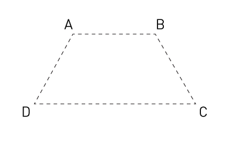

ofxCvImage

This is the base class for all the ofxOpenCV image types: ofxCvShortImage, ofxCvColorImage, ofxCvFloatImage, ofxCvGrayscaleImage. It's made to provide interoperability between the core OF imaging types, ofImage and ofTexture, and OpenCv.
allocate(...)
void ofxCvImage::allocate(int w, int h)
Allocates the image with the w, h passed in. This must be done before the pixels of the image are created.

blurGaussian(...)
void ofxCvImage::blurGaussian(int value=3)
Blurs the using Gaussian blurring. Gaussian blurring is typically to reduce image noise and reduce detail.
clear()
void ofxCvImage::clear()
Clears the pixel data of the image. The image must be allocated again with a call to allocate() before it can be used.
contrastStretch()
void ofxCvImage::contrastStretch()
This increases the contrast of the image remapping the brightest points in the image to 255 and the darkest points in the image to 0.
convertToRange(...)
void ofxCvImage::convertToRange(float min, float max)
Maps the pixels of an image to the min and max range passed in.
colors.setFromPixels(grabber.getPixels());
first = colors; // will leave unaltered
second = colors; // change it
second.convertToRange(100, 140); // super low contrast

countNonZeroInRegion(...)
int ofxCvImage::countNonZeroInRegion(int x, int y, int w, int h)
Returns the number of non-zero pixels in an image.
draw(...)
void ofxCvImage::draw(const ofRectangle &rect)
Draw the image into the ofRectangle passed in.
draw(...)
void ofxCvImage::draw(float x, float y, float w, float h)
Draw the image at the x,y with the w,h.
drawBlobIntoMe(...)
void ofxCvImage::drawBlobIntoMe(ofxCvBlob &blob, int color)
Draw the outline of an ofxCvblob into the ofxCvImage.
drawROI(...)
void ofxCvImage::drawROI(float x, float y)
Draw just the Region of Interest of the image at the x,y.
drawROI(...)
void ofxCvImage::drawROI(float x, float y, float w, float h)
Draw just the Region of Interest of the image into the x,y with the w,h passed in.

flagImageChanged()
void ofxCvImage::flagImageChanged()
Marks the image as changed so that the ofTexture can be updated, if the image contains one.
getIntersectionROI(...)
ofRectangle ofxCvImage::getIntersectionROI(const ofRectangle &rec1, const ofRectangle &rec2)
getPixels()
ofPixels & ofxCvImage::getPixels()
Returns a raw pointer to the pixel data within the image.
getRoiPixels()
ofPixels & ofxCvImage::getRoiPixels()
Returns a raw pointer to the pixel data within the Region of Interest in the ofxCvImage.
mirror(...)
void ofxCvImage::mirror(bool bFlipVertically, bool bFlipHorizontally)
Flips the image horizontally and/or vertically.
operator&=(...)
void ofxCvImage::operator&=(ofxCvImage &mom)
Binary & (Logical AND http://en.wikipedia.org/wiki/Bitwise_operation) the pixel data of the right hand side image from the current image:
cvPuppy.allocate( 320, 240 );
cvPuppy = puppyImg.getPixels(); // copy pixels from a loaded image
andPuppy.allocate( 320, 240 );
andPuppy.set(255, 0, 0); // make the AND image red
andPuppy &= cvPuppy; // will & all the bits

operator*=(...)
void ofxCvImage::operator*=(ofxCvImage &mom)
Multiplies the pixel data of the right hand side image from the current image:
first *= second; // both are ofxCvImage instances
operator+=(...)
void ofxCvImage::operator+=(float value)
Adds the pixel data of the right hand side image from the current image:
first += second; // both are ofxCvImage instances
operator+=(...)
void ofxCvImage::operator+=(ofxCvImage &mom)
Adds the pixel data of the right hand side image from the current image:
first += second; // both are ofxCvImage instances
operator-=(...)
void ofxCvImage::operator-=(float value)
Subtracts the pixel data of the right hand side image from the current image:
first -= second; // both are ofxCvImage instances
operator-=(...)
void ofxCvImage::operator-=(ofxCvImage &mom)
Subtracts the pixel data of the right hand side image from the current image:
first -= second; // both are ofxCvImage instances
operator=(...)
void ofxCvImage::operator=(const ofxCvColorImage &mom)
Copy the image data of an ofxCvColorImage into the ofxCvImage instance.
operator=(...)
void ofxCvImage::operator=(const ofxCvFloatImage &mom)
Copy the image data ofxCvFloatImage into the ofxCvImage instance.
operator=(...)
void ofxCvImage::operator=(const ofxCvGrayscaleImage &mom)
Copy a ofxCvGrayscaleImage into the current ofxCvImage.
operator=(...)
void ofxCvImage::operator=(const ofxCvShortImage &mom)
Copy the image data of a ofxCvShortImage into the ofxCvImage instance.
remap(...)
void ofxCvImage::remap(int mapX, int mapY)
This uses a generic geometrical transformation to remap one image to another. This is particularly useful when doing camera calibration.
resetAnchor()
void ofxCvImage::resetAnchor()
Reset the anchor point of the image, i.e. the center point for rotations,
rotate(...)
void ofxCvImage::rotate(float angle, float centerX, float centerY)
Rotates the image. This is different than the OpenGL rotate as it actually sets the pixel data, rather than just the posotion of the drawing.
scale(...)
void ofxCvImage::scale(float scaleX, float sclaeY)
Scales the image to the scaleX, scaleY passed in. This is different than the OpenGL rotate as it actually sets the pixel data, rather than just the posotion of the drawing.
scaleIntoMe(...)
void ofxCvImage::scaleIntoMe(ofxCvImage &mom, int interpolationMethod)
Scales the image passed in to be the size of the current image,
ofxCvImage first;
first.allocate(640, 480);
ofxCvImage second;
second.allocate(320, 240);
second.scaleIntoMe(first); // first is now 320,240
set(...)
void ofxCvImage::set(float value)
Set all the pixels in the image to the float value passed in. This is useful for blanking or filling an image quickly. the values are 1.0 to 255.0.
setAnchorPercent(...)
void ofxCvImage::setAnchorPercent(float xPct, float yPct)
Set the anchor point of the image, i.e. the center point for rotations, at the percentage positions passed in.
setAnchorPoint(...)
void ofxCvImage::setAnchorPoint(float x, float y)
Set the anchor point of the image, i.e. the center point for rotations, at the x,y passed in.
setFromPixels(...)
void ofxCvImage::setFromPixels(const ofPixels &pixels)
Set all the pixels in a ofxCvImage from an ofPixels reference.
setFromPixels(...)
void ofxCvImage::setFromPixels(const unsigned char *_pixels, int w, int h)
Set all the pixels in a ofxCvImage from a pointer to an array of unsigned char values, using the w and h parameters to determine the dimensions of the image.
setROI(...)
void ofxCvImage::setROI(const ofRectangle &rect)
Sets the region of interest on the image. Region of Interest is a rectangular area in an image, to segment object for further processing. Once the ROI is defined, OpenCV functions will operate on the ROI, reducing the number of pixels that the operation will examine.
setROI(...)
void ofxCvImage::setROI(int x, int y, int w, int h)
Sets the region of interest on the image. Region of Interest is a rectangular area in an image, to segment object for further processing. Once the ROI is defined, OpenCV functions will operate on the ROI, reducing the number of pixels that the operation will examine.
setRoiFromPixels(...)
void ofxCvImage::setRoiFromPixels(const ofPixels &pixels)
Set the Region Of Interest using an ofPixels reference The w,h of the ofPixels will define the area of the ROI
setRoiFromPixels(...)
void ofxCvImage::setRoiFromPixels(const unsigned char *_pixels, int w, int h)
Set the Region Of Interest using a pointer to an unsigned char array and a w,h to define the area of the ROI
setUseTexture(...)
void ofxCvImage::setUseTexture(bool bUse)
Sets whether the image is using a texture or not. If the image is not using a texture then calls to getTextureReference() will return null and the image cannot be drawn. This is handy if you know that you won't be displaying the image to the screen.
transform(...)
void ofxCvImage::transform(float angle, float centerX, float centerY, float scaleX, float scaleY, float moveX, float moveY)
Transforms the image with the angle, scaling, and transformation passed in. This is different than the OpenGL rotate as it actually sets the pixel data, rather than just the posotion of the drawing.
translate(...)
void ofxCvImage::translate(float x, float y)
Moves the image by the x,y amount passed in. This is different than the OpenGL rotate as it actually sets the pixel data, rather than just the posotion of the drawing.
undistort(...)
void ofxCvImage::undistort(float radialDistX, float radialDistY, float tangentDistX, float tangentDistY, float focalX, float focalY, float centerX, float centerY)
The function cvUnDistortOnce corrects camera lens distortion for the image. It requires that you have an estimate of the camera distortion from a call to cvCalibrateCamera() or other calibration method.
Documentation from code comments
/ undistort Usage Example: undistort( 0, 1, 0, 0, 200, 200, cwidth/2, cheight/2 ); creates kind of an old TV monitor distortion. /
updateTexture()
void ofxCvImage::updateTexture()
Updates the texture of the ofxCvImage if it contains one. This is handy after you've changed the image pixel data and want it to be uploaded to the texture on the graphics card.
warpIntoMe(...)
void ofxCvImage::warpIntoMe(ofxCvImage &mom, const ofPoint [4] src=4, const ofPoint [4] dst=4)
This warps the image perspective into the ofxCvImage using two sets four points passed in:
ofPoint[4] src;
src[0] = ofPoint(0, 0);
src[1] = ofPoint(320, 0);
src[2] = ofPoint(320, 240);
src[3] = ofPoint(0, 240);
ofPoint[4] dst;
dst[0] = ofPoint(10, 0);
dst[1] = ofPoint(310, 0);
dst[2] = ofPoint(310, 230);
dst[3] = ofPoint(10, 230);
image.warpIntoMe(parent, src, dst);

warpPerspective(...)
void ofxCvImage::warpPerspective(const ofPoint &A, const ofPoint &B, const ofPoint &C, const ofPoint &D)
This warps the image perspective to the four points passed in:
comments powered by Disqus
comments
You can add comments with usage examples or other information for each class, method or variable, for adding documentation to an empty section or reporting errors is better to send a fix or open an issue through github.
When posting code enclose it in: